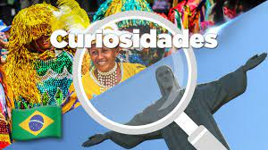

Brasil es un vasto país de Sudamérica que se extiende desde la Cuenca del Amazonas en el norte hasta los viñedos y las enormes cataratas del Iguazú en el sur. Río de Janeiro, simbolizado por su estatua de 38 m del Cristo Redentor sobre el cerro del Corcovado.
El Carnaval. Quizás esta sea la festividad más conocida a nivel mundial que se lleva a cabo en Brasil. Cada región del país tiene su forma de celebrar estos días, 4 para ser exactos, donde la fiesta es sin parar. Una de las cosas más populares, es la competencia de samba ente las distintas escuelas de todo el país. El carnaval más popular, es el que se celebra en Rio de Janeiro. El futbol también es parte de la tradición. Los niños parecieran nacer con capacidades para la práctica de este deporte, no por nada es el país con 5 copas del mundo. La religión es un punto de convergencia para distintas religiones que hacen vida dentro del país, demostrando su capacidad de integración y respeto. Para recibir año nuevo se van a las playas, vestidos de blanco, hacen rituales frente al mar con velas para que el mar se lleve lo viejo y traiga lo nuevo. El espectáculo de fuegos artificiales también es emblemático.
Danzas, Fiestas y Carnaval: Capoeira: en lo que respecta a los bailes y danzas tradicionales de Brasil, en primer lugar, tenemos que mencionar la Capoeira, por muchos considerada como toda una obra de arte. Mezcla diferentes elementos de artes marciales, la danza, el deporte y la expresión corporal. Históricamente era practicada por los antiguos esclavos, quienes dieron origen y desarrollaron diferentes técnicas de una de las danzas más importantes de Brasil. Carnaval Río de Jainero: Los brasileños también tienen una de las fiestas de carnaval más intensas, coloridas y populares del mundo entero, el famoso Carnaval de Rio de Janeiro. El Carnaval es una celebración que se vive como toda una fiesta nacional, en las que todos bailan al ritmo de los grupos de Samba, del más pequeño al más grande. Se desarrolla durante unos 40 días de pascua, más de 2 millones de personas se reúnen en las calles, al lado del sambódromo, para observar y participar en el desfile de los coloridos e inmensos carros alegóricos junto a los músicos y bailarines. Samba: Se trata de un ritmo fuerte, se utilizan toda clase de instrumentos de percusión y se vuelve realmente muy contagioso. Se ha convertido en un género musical tan importante en Brasil que ha dado lugar a muchos otros nuevos, como por ejemplo la bossa nova.
CARACTERISTICAS GENERALES Brasil es una República Federal conformada por veintiséis estados y un Distrito Federal en el cual se encuentra Brasilia, que es la capital del país. Al norte del país se encuentra la cuenca amazónica con llanuras y mesetas de baja altitud al igual que al nordeste, con la diferencia que el clima en esta zona presenta mayores variaciones ya que es seco y caluroso en el interior y húmedo en el litoral. En el centro-oeste se ubica el Mato Grosso que se caracteriza por sus altas mesetas y valles, de clima tropical. Al sur se extiende una accidentada región que se convierte en la frontera con el Uruguay, cuyo clima se caracteriza por su verano caluroso e invierno muy templado. En su aspecto económico, Brasil ha comenzado a ejercer un rol activo de líder en lo que refiere a los principales temas de la agenda exterior. Asimismo se caracteriza también por una gran apertura en lo que respecta al área de servicios. POBLACION La población es de 196.000.000 habitantes
